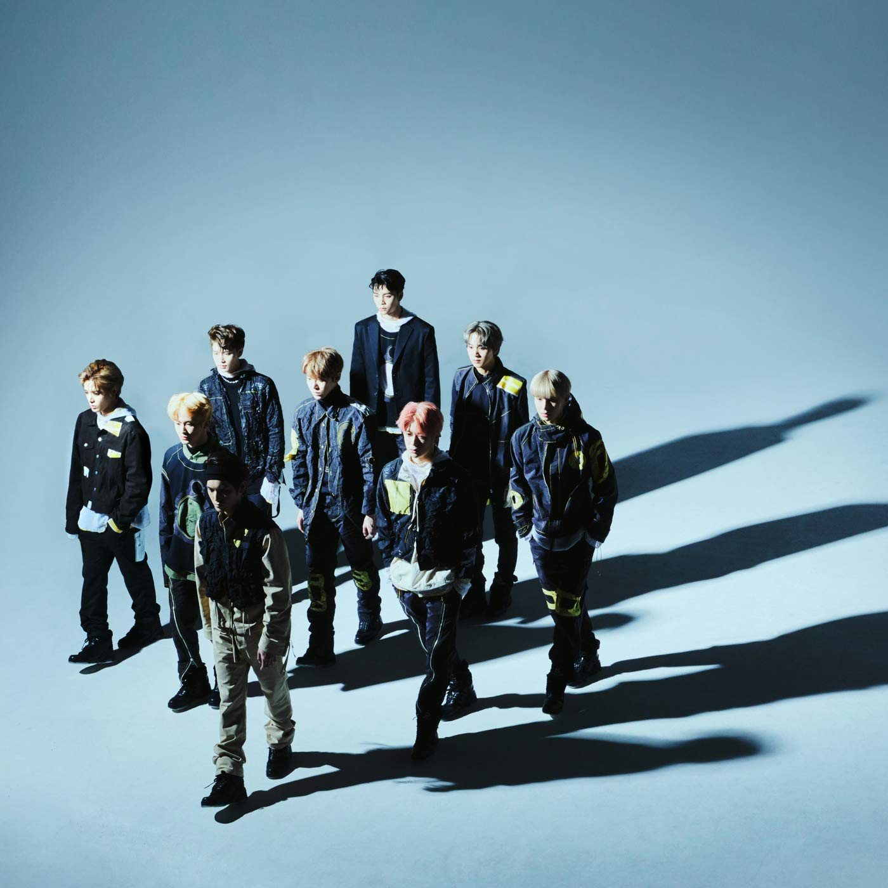

Второй юнит, NCT 127, дебютировал 7 июля 2016 года с мини-альбомом “Fire truck” в составе 7 участников.
Второй мини-альбом “Limitless” был выпущен в январе, но уже в составе 9 человек.
В июне NCT 127 выпустили третий мини-альбом “Cherry Bomb” так же в составе 9 человек. И так же в мае 2018
года был выпущен японский мини-альбом под названием “Chain”.
В составе 10 человек NCT 127 вернулись в октябре, но уже с полноформатным альбомом “Regular-Irregular”. И
спустя всего месяц с “Regulate”, но в составе 9 человек.
В марте 2019 был выпущен второй японский мини-альбом “Awaken”. В мае мини-альбом “We Are Superhuman”. В
обоих камбэках состав участников так же был 9 человек.
В основном юнит является фиксированным и участники, именно в этом юните, не меняются, но иногда их
количество да.

